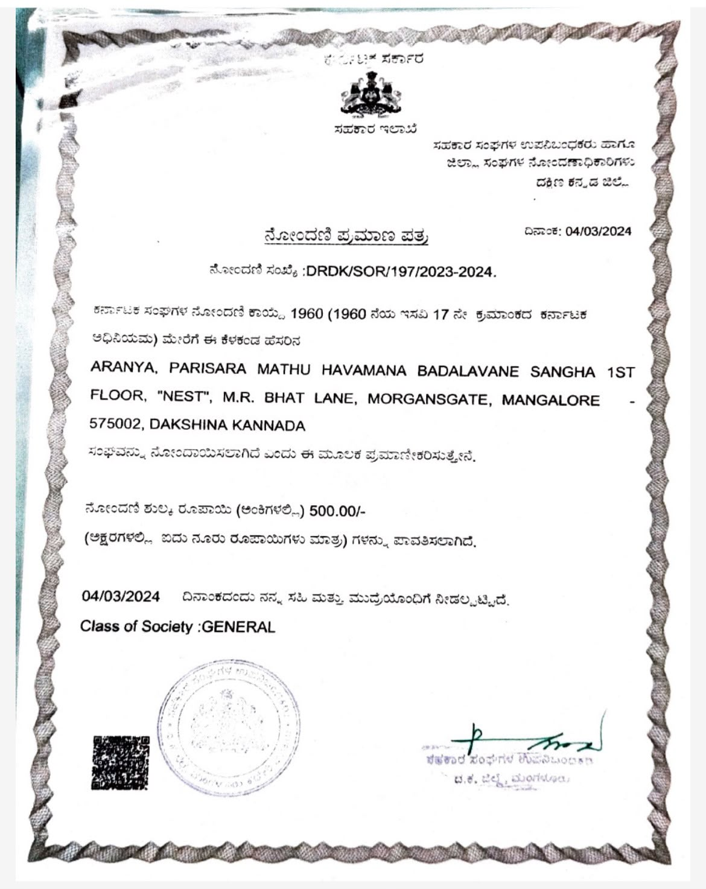

ABOUT SFECC
Standing up for our environment.
The Society for Forest, Environment and Climate Change is an environmental advocacy organisation working from Mangalore, Karnataka.
WHO WE ARE
Local roots. Environmental action.
SFECC works to protect forests, rivers, water bodies, biodiversity and other natural ecosystems in and around Coastal Karnataka.
Environmental concerns often require more than awareness. They require citizens and organisations willing to question harmful practices, engage with authorities and, when necessary, seek legal remedies.
SFECC uses a combination of environmental advocacy, grassroots engagement and legal action to bring environmental issues into public attention and seek meaningful action.

Click to view certificate
REGISTERED SOCIETY
A registered organisation working for the environment.
SFECC is a registered organisation working towards the protection of forests, environment and natural resources.
Society Registration Certificate
OUR APPROACH
Awareness is important. Action makes a difference.
Protect
Work towards protecting forests, rivers, water bodies and natural ecosystems.
Question
Raise concerns when environmental laws, safeguards or public interests are ignored.
Act
Use public advocacy, engagement and legal avenues to seek environmental protection.
Engage
Encourage citizens and communities to participate in protecting their environment.
ENVIRONMENTAL JUSTICE
When necessary, we take the legal route.
SFECC has pursued environmental concerns through legal forums, including the National Green Tribunal, where appropriate.
Our cases address issues such as pollution, protection of natural resources, environmental violations and accountability in environmental governance.
View our cases →OUR REGION
Coastal Karnataka is home to extraordinary natural wealth.
Protecting it is a responsibility we all share.